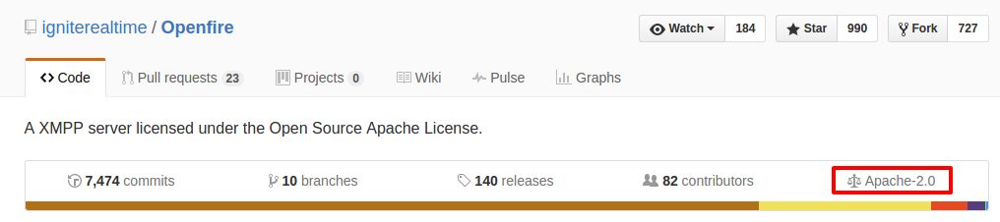
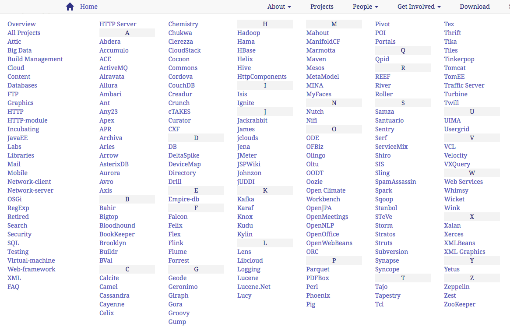

Abstract
Apache License는 아파치 재단에서 만들어진 관대한 오픈소스 소프트웨어 라이선스이다. 다른 라이선스와 같이 유저들이 소스를 수정하거나 재배포, 자유로운 사용이 가능하지만 copyright가 보존이 된다. 아파치 재단의 프로젝트는 모두 Apache License가 적용된다.
보통 copyright에 의해 소스의 자유로운 사용, 수정 및 재배포는 금지되지만 그 소스나 프로젝트의 rights-holder가 유저에게 rights를 줌으로써 이러한 제한을 없앨 수 있다. 유저가 원래의 right를 받음으로써 자유로운 소스 수정 및 재배포 또는 판매까지 가능하다.
단, 원래 라이선스에다가 자신이 어떤것을 수정했는지 추가 해야한다. 그리고 원래의 소스를 라이브러리나 API 형식으로 사용하는 경우 본래의 소스는 Apache License를 유지해야 하지만 새로운 소스는 원하는 License를 골라 선택할 수 있다.
Explain
GPL License와 가장 큰 차이는 modified version에 대해 강제성이 없다는 것이다. GPL License는 파생된 모든 소스 코드를 GPL License를 적용하도록 강제를 하지만, Apache License는 본래의 코드만 Apache License를 유지하면 되고, 새로운 코드는 자신이 라이선스를 선택할 수 있다.
GPL License v2와는 섞어서 라이선스를 쓰지 못하지만 GPL License v3는 Apache License와 섞어서 쓸 수 있다.
Apache License를 채택한 소프트웨어는 자유롭게 판매가 가능하지만 Apache Foundation에서 만들었다거나 Apache Mark를 사용해서는 절대로 안 된다.
Applying
라이선스 적용 방법은 프로젝트 폴더의 가장 상위 폴더에 LICENSE 파일이나 COPYING 파일에다가 Apache License 원문을 삽입하면 된다. Github에서도 이것을 인식해서 라이선스를 명시해 준다.
Apache Foundation Projects
Apache Foundation에서 진행하는 프로젝트의 목록은 다음과 같다. 모두 Apache License를 채택했다.

Reference
Apache License 2.0 원문
Apache License
Version 2.0, January 2004
http://www.apache.org/licenses/
TERMS AND CONDITIONS FOR USE, REPRODUCTION, AND DISTRIBUTION
"License" shall mean the terms and conditions for use, reproduction, and distribution as defined by Sections 1 through 9 of this document.
"Licensor" shall mean the copyright owner or entity authorized by the copyright owner that is granting the License.
"Legal Entity" shall mean the union of the acting entity and all other entities that control, are controlled by, or are under common control with that entity. For the purposes of this definition, "control" means (i) the power, direct or indirect, to cause the direction or management of such entity, whether by contract or otherwise, or (ii) ownership of fifty percent (50%) or more of the outstanding shares, or (iii) beneficial ownership of such entity.
"You" (or "Your") shall mean an individual or Legal Entity exercising permissions granted by this License.
"Source" form shall mean the preferred form for making modifications, including but not limited to software source code, documentation source, and configuration files.
"Object" form shall mean any form resulting from mechanical transformation or translation of a Source form, including but not limited to compiled object code, generated documentation, and conversions to other media types.
"Work" shall mean the work of authorship, whether in Source or Object form, made available under the License, as indicated by a copyright notice that is included in or attached to the work (an example is provided in the Appendix below).
"Derivative Works" shall mean any work, whether in Source or Object form, that is based on (or derived from) the Work and for which the editorial revisions, annotations, elaborations, or other modifications represent, as a whole, an original work of authorship. For the purposes of this License, Derivative Works shall not include works that remain separable from, or merely link (or bind by name) to the interfaces of, the Work and Derivative Works thereof.
"Contribution" shall mean any work of authorship, including the original version of the Work and any modifications or additions to that Work or Derivative Works thereof, that is intentionally submitted to Licensor for inclusion in the Work by the copyright owner or by an individual or Legal Entity authorized to submit on behalf of the copyright owner. For the purposes of this definition, "submitted" means any form of electronic, verbal, or written communication sent to the Licensor or its representatives, including but not limited to communication on electronic mailing lists, source code control systems, and issue tracking systems that are managed by, or on behalf of, the Licensor for the purpose of discussing and improving the Work, but excluding communication that is conspicuously marked or otherwise designated in writing by the copyright owner as "Not a Contribution."
"Contributor" shall mean Licensor and any individual or Legal Entity on behalf of whom a Contribution has been received by Licensor and subsequently incorporated within the Work.
2. Grant of Copyright License. Subject to the terms and conditions of this License, each Contributor hereby grants to You a perpetual, worldwide, non-exclusive, no-charge, royalty-free, irrevocable copyright license to reproduce, prepare Derivative Works of, publicly display, publicly perform, sublicense, and distribute the Work and such Derivative Works in Source or Object form.
3. Grant of Patent License. Subject to the terms and conditions of this License, each Contributor hereby grants to You a perpetual, worldwide, non-exclusive, no-charge, royalty-free, irrevocable (except as stated in this section) patent license to make, have made, use, offer to sell, sell, import, and otherwise transfer the Work, where such license applies only to those patent claims licensable by such Contributor that are necessarily infringed by their Contribution(s) alone or by combination of their Contribution(s) with the Work to which such Contribution(s) was submitted. If You institute patent litigation against any entity (including a cross-claim or counterclaim in a lawsuit) alleging that the Work or a Contribution incorporated within the Work constitutes direct or contributory patent infringement, then any patent licenses granted to You under this License for that Work shall terminate as of the date such litigation is filed.
4. Redistribution. You may reproduce and distribute copies of the Work or Derivative Works thereof in any medium, with or without modifications, and in Source or Object form, provided that You meet the following conditions:
- You must give any other recipients of the Work or Derivative Works a copy of this License; and
- You must cause any modified files to carry prominent notices stating that You changed the files; and
- You must retain, in the Source form of any Derivative Works that You distribute, all copyright, patent, trademark, and attribution notices from the Source form of the Work, excluding those notices that do not pertain to any part of the Derivative Works; and
- If the Work includes a "NOTICE" text file as part of its distribution,
then any Derivative Works that You distribute must include a readable copy
of the attribution notices contained within such NOTICE file, excluding
those notices that do not pertain to any part of the Derivative Works, in
at least one of the following places: within a NOTICE text file distributed
as part of the Derivative Works; within the Source form or documentation,
if provided along with the Derivative Works; or, within a display generated
by the Derivative Works, if and wherever such third-party notices normally
appear. The contents of the NOTICE file are for informational purposes only
and do not modify the License. You may add Your own attribution notices
within Derivative Works that You distribute, alongside or as an addendum to
the NOTICE text from the Work, provided that such additional attribution
notices cannot be construed as modifying the License.
You may add Your own copyright statement to Your modifications and may provide additional or different license terms and conditions for use, reproduction, or distribution of Your modifications, or for any such Derivative Works as a whole, provided Your use, reproduction, and distribution of the Work otherwise complies with the conditions stated in this License.
5. Submission of Contributions. Unless You explicitly state otherwise, any Contribution intentionally submitted for inclusion in the Work by You to the Licensor shall be under the terms and conditions of this License, without any additional terms or conditions. Notwithstanding the above, nothing herein shall supersede or modify the terms of any separate license agreement you may have executed with Licensor regarding such Contributions.
6. Trademarks. This License does not grant permission to use the trade names, trademarks, service marks, or product names of the Licensor, except as required for reasonable and customary use in describing the origin of the Work and reproducing the content of the NOTICE file.
7. Disclaimer of Warranty. Unless required by applicable law or agreed to in writing, Licensor provides the Work (and each Contributor provides its Contributions) on an "AS IS" BASIS, WITHOUT WARRANTIES OR CONDITIONS OF ANY KIND, either express or implied, including, without limitation, any warranties or conditions of TITLE, NON-INFRINGEMENT, MERCHANTABILITY, or FITNESS FOR A PARTICULAR PURPOSE. You are solely responsible for determining the appropriateness of using or redistributing the Work and assume any risks associated with Your exercise of permissions under this License.
8. Limitation of Liability. In no event and under no legal theory, whether in tort (including negligence), contract, or otherwise, unless required by applicable law (such as deliberate and grossly negligent acts) or agreed to in writing, shall any Contributor be liable to You for damages, including any direct, indirect, special, incidental, or consequential damages of any character arising as a result of this License or out of the use or inability to use the Work (including but not limited to damages for loss of goodwill, work stoppage, computer failure or malfunction, or any and all other commercial damages or losses), even if such Contributor has been advised of the possibility of such damages.
9. Accepting Warranty or Additional Liability. While redistributing the Work or Derivative Works thereof, You may choose to offer, and charge a fee for, acceptance of support, warranty, indemnity, or other liability obligations and/or rights consistent with this License. However, in accepting such obligations, You may act only on Your own behalf and on Your sole responsibility, not on behalf of any other Contributor, and only if You agree to indemnify, defend, and hold each Contributor harmless for any liability incurred by, or claims asserted against, such Contributor by reason of your accepting any such warranty or additional liability.
END OF TERMS AND CONDITIONS